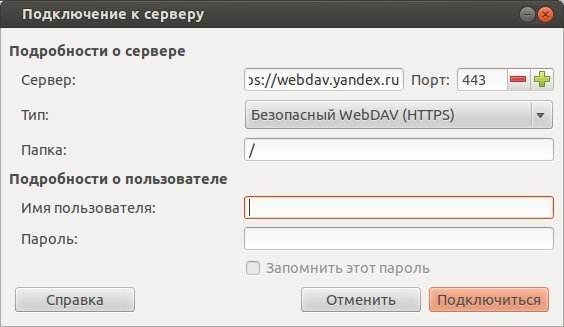
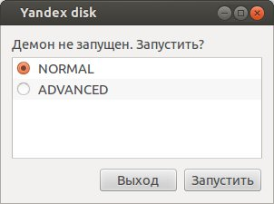
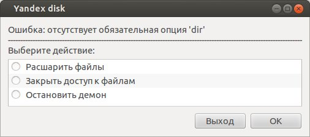

Просто Линукс
Про Linux и не только…
Как подключить Яндекс Диск в Linux?
Уже не раз я писал о различных облачных сервисах, таких, как Облако Майл.ру, Google Диск, Asus Диск, Wuala и DROPBOX. Но вот о самом моём любимом и часто используемом облаке, Яндекс Диске, я не писал ни разу.
Кстати, нет ничего обиднее, чем пЕрЕплАтИть при покупке 🤦🏻♂️ Поэтому ОЧЕНЬ рекомендую подписаться на канал в Телеграм 👉🏻Промокоды для Алиэкспресс👈🏻 Постоянно узнавая про новые акции 🔥 на разные товары, вы точно НИКОДА не переплатите 👌🏻
Это нужно исправить, так как достойные продукты заслуживают хороших отзывов.
Как подключить Яндекс Диск в Linux?
Для работы с Яндекс диском в Линуксе есть несколько способов. Самый простой - это пользоваться им через браузер. Но как понимаете, это не даёт возможность нам синхронизировать файлы на автомате.
Поэтому, попробую найти оптимальный способ подружить Яндекс Диск с моим жёстким диском.
Подключение Яндекс Диска в Linux Mint
Первый способ сделать всё более красиво - это воспользоваться файловым менеджером и подключить Яндекс диск через протокол WebDav.
Открываем Nautilus и во вкладке ФАЙЛ выбираем пункт ПОДКЛЮЧИТЬСЯ К СЕРВЕРУ. А далее заполняем поля:
Сервер: webdav.yandex.ru
Порт: 443
Папка: /
Ну и свой логин и пароль в системе, конечно. Далее нажимаем кнопку СОЕДИНИТЬ и по идее у вас в проводнике появится ссылка на внешний диск, то есть наш Яндекс Диск.

К сожалению, у меня этот метод перестал в последнее время работать, так что я буду использовать другой, более современный и удобный. А для этого попробую воспользоваться пакетом, который предлагает сам Яндекс.
Идём по этому адресу и скачиваем нужный нам файл, в моём случае это пакет yandex-disk_latest_i386.deb.
Консольный клиент Яндекс Диск для Linux можно скать тут....
Но можно сделать всё одной командой в терминале, на то он и линукс:)
echo "deb http://repo.yandex.ru/yandex-disk/deb/ stable main" | sudo tee -a /etc/apt/sources.list.d/yandex.list > /dev/null && wget http://repo.yandex.ru/yandex-disk/YANDEX-DISK-KEY.GPG -O- | sudo apt-key add - && sudo apt-get update && sudo apt-get install -y yandex-disk
У меня почему то сразу не установился пакет, поэтому пришлось ещё раз дать отдельно команду на установку:
sudo apt-get install -y yandex-disk
Всё, программа установлена. Но вы не найдёте её ярлык в меню, так как программа консольная, и работать с ней можно только в терминале. Вот некоторые полезные команды для этого:
$ yandex-disk token USERNAME
Так мы подключаемся в нашему Яндекс Диску.
$ yandex-disk start - dir /home/Тут ваш путь к папке
Так мы запускаем синхронизацию наших файлов. Команд ещё много и о них можно узнать с официального сайта по ссылке выше. Так же есть еще одна консольная программа для подключения Яндекс Диска через консоль, можете попробовать ее.
Но согласитесь, это не очень удобно, ведь у вас дома не сервер и вы не системный администратор? Именно для вас один хороший человек сделал графическое приложение для управления Яндекс Диском, которое можно скачать ЗДЕСЬ.
После установки пакета запускаем его командой, так как ярлыка в меню я не нашёл:
ya-gui
Вылетает окошко:

Если выбираем пункт NORMAL, то следующим будет такое окошко:

Тут всё понятно, выбирайте, что хотите. Так же после (скорее после перезагрузки, так как у меня стразу не появилось) у вас появится в контекстном меню файлового менеджера такой пункт:
Удобно, согласитесь? Я думаю, что в будущем сам Яндекс предоставит нормальный графический софт для своего Яндекс Диска.
у а пока всё так, но это лучше, чем ничего. А вы пользуетесь Яндекс диском в Linux?
P.S. Тут мой знакомый тоже написал интересную статью по подключению Яндекс Диска в Ubuntu, думаю, будет вам полезно...
Лично я часто покупаю на Aliexpress и стараюсь это делать, когда скидки на МАКСИМУМ 🔥 Поэтому ОЧЕНЬ советую ВАМ Телеграм канал 👉🏻Распродажи на Алиэкспресс👈🏻
9 комментариев
Где можно хранить файлы в интернете бесплатно?
Уже много раз я писал тут о разных облачных сервисах, где можно хранить файлы в интернете бесплатно. На данный момент [urlspan]я читать дальше...
Облачное хранилище бесплатно + 25 гигабайт!
Сейчас никого облачным сервисом не удивишь, писал о них уже не раз, и вот не удержался и решил написать еще об читать дальше...
Вот и опять я возвращаюсь к Яндекс Диску. Назвал я статью так (Яндекс диск Ubuntu GUI), чтобы сразу задать вектор читать дальше...
Как Яндекс Диск установить на компьютер?
Из вех облачных хранилищ Яндекс Диск без сомнения один из лучших. Я об этом сужу уже потому, что многие вебмастера для читать дальше...